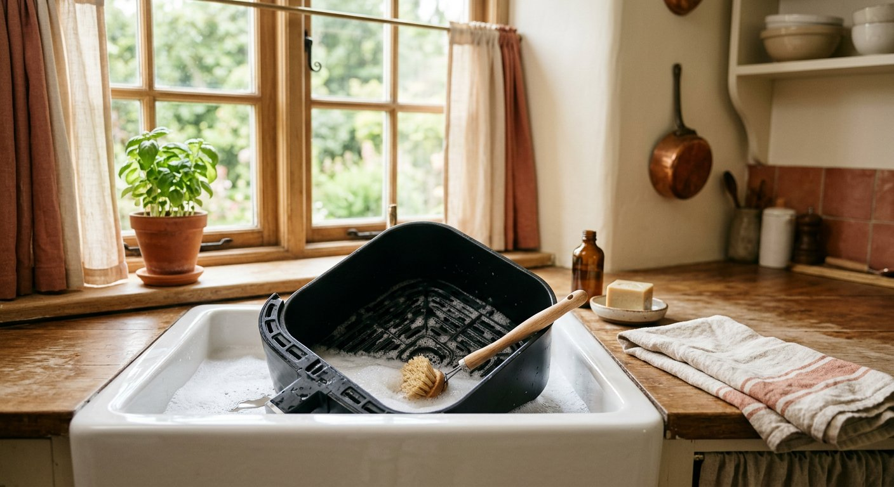

How to assess cleanup and counter-space trade-offs

Editorial hypothesis. Working title from our publishing plan — the season's anchor read for holiday hosting, not a popularity claim.
Spec sheets sell cooking performance; daily life is decided by the two costs that never get a headline: what you'll wash every night, and what the machine permanently occupies. Get these two right and almost any competent unit earns its spot. Get them wrong and the best-cooking appliance in the world migrates to the garage by February.
Cleanup: audit the washable surface, not the claim
- Count the pieces that touch food. Basket + crisper plate is the minimal case. Oven-style adds racks, a drip tray, and the door's crumb path. Every extra piece is a nightly tax you pay for range.
- "Dishwasher-safe" — which parts? The phrase usually means the basket, sometimes the plate, rarely the lid or housing gasket. On any listing, expand the claim: which exact parts, top rack or not, and does the coating survive it long-term?
- Coating behavior over months. Nonstick makes week one easy. What matters is month six: does the coating still release, or are you soaking? Prefer listings and reviews that speak to durability, and treat "metal utensil safe" claims with the skepticism they've earned.
- The soak test. If a part can't go in the dishwasher, can it soak? Geometry with corners and seams soaks badly. Flat plates and smooth drawers soak well.
- Grease where? Units that route grease away from the element clean up faster and smoke less. Where does each design put the mess?
Counter space: the three measurements that matter
- Footprint with clearance. Manufacturers list depth with handles. Also measure heat clearance above (under-cabinet units are usually a no) and side clearance for airflow.
- Drawer/door swing. A pull-out basket needs a foot of forward clearance; a drop-down door eats depth in front of the unit. Your kitchen decides, not the spec sheet.
- Where it lives when idle. If it won't stay on the counter, weight and handle design decide how often you'll actually use it. Heavy + awkward = garage appliance.
The one-line decision rule
Choose the unit whose worst nightly moment you can accept: the basket's single drawer of scrubbing, or the oven's rack-and-tray routine. Everything else is marketing.
Frequently asked
Is the dishwasher actually safe for nonstick baskets?
Manufacturers that allow it design for it — but abrasive cycles and neighboring dishes wear coatings faster than hand-washing. The practical answer: follow the listing's own claim (once confirmed), and expect hand-washing to extend coating life.
Can I put an air fryer in a cabinet when not in use?
Storage, yes — use, no. They need airflow and clearance while running. Plan counter space for operation and storage space separately.
What's the single biggest counter-space mistake?
Buying for the footprint without the door/drawer swing. The unit fits; the drawer doesn't open.